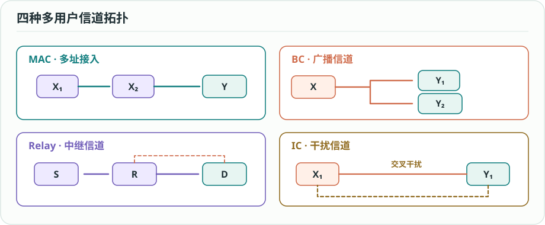
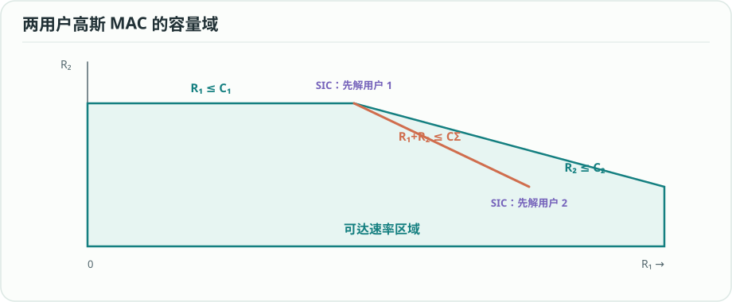
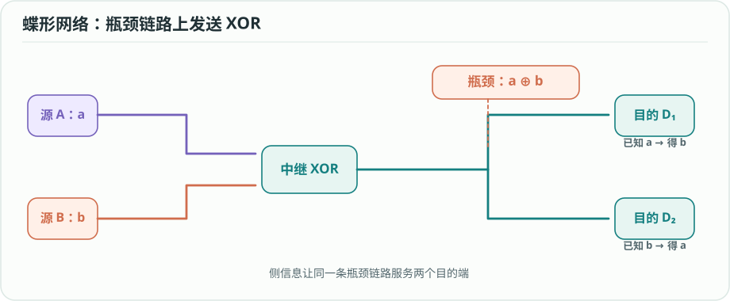

为什么单用户容量不够用？
点到点信道只需回答一个问题：发送者每次使用信道，最多能可靠传送多少比特？多用户网络则要同时描述多个消息流。用户之间共享功率、频谱、接收端和中继节点，一个用户的输入可能成为另一个用户的干扰，因此答案通常是可达速率向量的集合，而不是单个容量数字。
本章先区分四种基本拓扑：多个发送者汇聚到一个接收者的多址接入信道（MAC）；一个发送者服务多个接收者的广播信道（BC）；中继协助源—宿通信的 Relay；以及多个发送—接收对互相干扰的 Interference Channel。网络编码再把“节点只能转发比特”的直觉扩展为“节点可以对收到的信息做代数运算”。

统一的离散无记忆多址信道由条件分布 W(y|x₁,x₂) 描述。发送端独立编码各自消息，接收端观察同一个 Y 并尝试联合恢复消息。容量域的边界取决于信道转移规律、输入分布、功率约束和允许的编码策略。
多址接入：容量是区域，不是一个数
考虑实值两用户高斯 MAC：Y = X₁ + X₂ + Z，噪声 Z∼N(0,N)，两用户满足平均功率约束 E[Xᵢ²]≤Pᵢ。采用独立高斯码本时，所有可达速率对必须满足三条约束：
前两条是各用户单独面对噪声时的速率上限；第三条限制两条消息的总速率。第三条不是前两条简单相加：接收端联合处理两个码本，观测中包含二者叠加后的总信号功率。公式中的 1/2 对应每次实值信道使用；若改用复基带符号或每秒单位，归一化会改变。

例如取 P₁=2、P₂=1.5、N=1，则单用户上限约为 0.7925 和 0.6610 bit/real-use，总速率上限约为 1.0850。若只盯着某一个用户的单独上限，就会忽略两人同时高速发送时必须满足的总和约束。
这是实值高斯 MAC 的解析容量域，不是随机仿真。拖动滑块观察用户 2 的单用户边界和总速率边界如何变化。
SIC：解码顺序决定边界角点
连续干扰消除（SIC）不是把两个用户的干扰“凭空消掉”，而是先把其中一条消息可靠解码，再重构并减去对应码字，最后解码另一条消息。先解用户 1 时，用户 1 把用户 2 视作噪声；成功恢复 X₁ 后，用户 2 的解码可利用已知 X₁。交换顺序会得到另一处边界角点。
在高斯 MAC 中，联合典型性解码可达到整个容量域；SIC 的两个顺序给出两个极端角点，时分/时间共享形成凸包边界。实践系统还要考虑有限码长、信道估计误差、功率控制与误码传播：若第一步误译，后续抵消可能反而放大错误。
广播信道：叠加编码与退化结构
广播信道只有一个发送者，却要服务多个接收者。先看物理退化的两用户高斯模型：Yₛ=X+Zₛ、Y𝓌=X+Z𝓌，且 Nₛ<N𝓌，强用户观测更干净；若能构造 X→Yₛ→Y𝓌 的退化 Markov 链，就可用退化广播信道的单字母容量表达式分析。
叠加编码把发射信号拆成弱用户层和强用户层：X=X𝓌+Xₛ，功率满足 P𝓌+Pₛ≤P。弱用户把强用户层当噪声；强用户先解弱用户层、抵消后再解自己的层：
这里的层次和用户强弱必须说清楚：弱用户只解自己的层；强用户有能力先解弱层并做串行抵消。一般非退化广播信道的容量区域并没有同样简单的完整表达式，不能把退化信道的结论推广到任意 BC。
中继：切集上界与可达下界
中继信道包含源 S、中继 R 和目的端 D。中继观察 Yᵣ，并在后续时刻根据过去观测发送 Xᵣ；目的端收到 Y。源和中继共同发射可能改善目的端的信噪比，但中继必须先获得足够的信息才能帮助转发。
对一般离散无记忆中继信道，切集（cut-set）论证给出容量上界：把网络切成两侧，信息流不能超过穿过任一切面的互信息。译码转发（decode-and-forward, DF）则给出一种可达下界：中继先可靠解出源消息，再与源协同发送。
DF 的典型可达率包含两个瓶颈：中继必须能从自己的观测中解出源消息，目的端也必须能解出源与中继协同发送的消息。一般信道中这两个界之间可能有差距；只有在特定退化条件下，才能得到相应的精确容量定理。不能把 cut-set 上界称作“中继容量公式”。
Cover 与 El Gamal 的经典工作系统化了中继信道的容量定理、上下界和 block-Markov 编码；后续 compress-and-forward 则让中继压缩观测而不必完整解码源消息。不同策略的优势取决于信道拓扑和相关性。
干扰信道：把干扰当噪声还是消息
双用户干扰信道可写成 Y₁=X₁+a₁₂X₂+Z₁、Y₂=a₂₁X₁+X₂+Z₂。每个接收端都想恢复自己的消息，同时面对另一个发送端的信号。弱干扰时，把干扰当噪声可能足够；强干扰时，接收端解码干扰消息可能更好；中间区域则需要把消息拆成公共部分和私有部分。
Han–Kobayashi 思路将每个用户消息分成公共与私有两层：公共层可被两个接收端解码，私有层主要由目标接收端解码。它揭示了干扰管理并非只有“全解码”或“全当噪声”两种极端。一般干扰信道的完整容量区域仍是困难问题，特殊强/弱/退化条件下才有已知精确结果或紧界。
网络编码：中间节点也能计算
在传统路由中，中间节点通常复制并转发收到的比特流。网络编码允许节点对多个流做代数运算。蝶形网络是经典例子：两个源分别发送 a、b，瓶颈链路只有一个比特容量；中间节点发送 a⊕b，两个目的端各自已知其中一个源比特，因此都能恢复另一个。

对单源 multicast 网络，线性网络编码与最大流—最小割思想有深刻联系。网络编码的收益依赖多播需求、拓扑、有限域和边容量；不能推断任意单播网络都能通过 XOR 获益。
多用户信道的建模检查
- 先画清楚谁发送、谁接收、谁能看到哪个输出，再写条件分布。
- 容量域描述多个速率的联合可达性；每条边界不等式都对应一个信息流瓶颈。
- 区分精确容量、可达下界、切集上界与数值近似。
- 说明实/复信道、每次使用/每秒、独立输入/相关输入和平均功率约束。
- SIC、叠加编码、DF、compress-and-forward 与网络编码是不同机制，不能混用名称。
来源与延伸阅读
- El Gamal & Cover (1980), Multiple User Information Theory：MAC、广播、Relay 与多用户网络的统一综述。
- MIT 6.441 Lecture 20：多址信道容量域与高斯 MAC。
- MIT 6.441 Lecture 21：广播信道和退化广播信道。
- Cover & El Gamal (1979), Capacity Theorems for the Relay Channel：中继信道的精确结果和一般上下界。
- Ahlswede et al. (2000), Network Information Flow：网络编码与多播信息流。